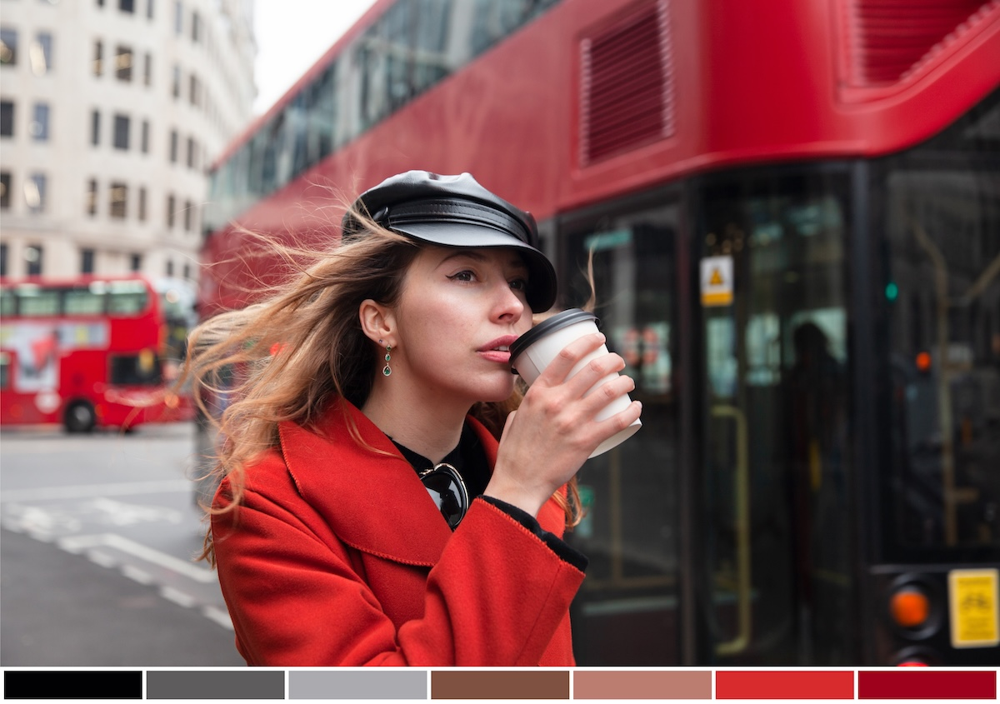

Fotoğrafta Renk Derecelendirme (Color Grading): Temel Teknikler ve Örnek Ayarlar
Fotoğrafta renk derecelendirme, bir sahnenin renk tonlarını değiştirerek fotoğrafa belirli bir atmosfer kazandırma sürecidir. Color grading, yalnızca renk düzeltmeden (color correction) farklıdır; burada amaç teknik hataları gidermekten çok duyguyu, hikâyeyi ve estetiği güçlendirmektir. Bu yazıda color grading’in temellerini, profesyonel teknikleri ve popüler tarzlar için örnek ayarları bulabilirsiniz.
Color Grading Nedir?
Color grading, bir fotoğrafın renk paletini bilinçli olarak değiştirip düzenleyerek belirli bir görünüm oluşturma işlemidir. Fotoğrafın ruhunu belirleyen pek çok şey bu aşamada şekillenir:
- Soğuk ve dramatik bir hava
- Sıcak ve nostaljik bir ton
- Sinematik kontrast
- Pastel ve yumuşak görüntüler
Renk derecelendirme genellikle Lightroom, Photoshop, Capture One veya mobil uygulamalarda Split Toning, HSL, Curves, Color Wheels gibi araçlarla yapılır.
Color Grading ile Color Correction Arasındaki Fark
Bu iki kavram çoğu zaman karıştırılır. Aralarındaki en temel farklar:
Color Correction (Renk Düzeltme)
- Fotoğrafı doğal ve doğru renge çekmeyi hedefler.
- Beyaz ayarı, pozlama, kontrast, ton ve gölgeler düzeltilir.
Color Grading (Renk Derecelendirme)
- Sanatsal bir görünüm yaratır.
- Fotoğrafa duygu, tarz ve atmosfer katar.
- Doğal olmayan ama estetik açıdan güçlü renk paletleri oluşturabilir.
Color Grading İçin Temel Araçlar
Tone Curve (Eğri Aracı)
Renk derecelendirmede en etkili araçlardan biridir.
Eğri ile yapılabilecekler:
- Kontrast artırma veya azaltma
- Mat (faded) görüntü oluşturma
- Kırmızı, yeşil ve mavi kanallar üzerinden ton değişikliği
- Film görünümü verme
HSL (Hue, Saturation, Luminance)
Bu panel, her bir rengi ayrı ayrı kontrol etmenizi sağlar.
- Hue: Renk tonunu değiştirir
- Saturation: Rengin doygunluğunu artırır/azaltır
- Luminance: Rengin parlaklığını ayarlar
Örneğin yalnızca turuncuları açarak ten tonlarını ön plana çıkarabilirsiniz.
Split Toning veya Color Grading Paneli
Gölgeler, orta tonlar ve parlak alanlar için ayrı renk tonları eklemenizi sağlar. Sinematik tonlamanın temel araçlarından biridir.
Color Wheels
Işıklı alanlar, gölgeler ve midtones üzerinde daha hassas ton kontrolü yapmayı sağlar.
LUT (Look-Up Table)
Hazır renk profilleri olarak bilinir. Film tonları, sinematik renkler veya markalara özel renk profilleri LUT olarak uygulanabilir.
Color Grading Sürecine Başlamadan Önce Yapılması Gerekenler
- RAW çekim kullanın. Çok daha geniş renk bilgisi içerir.
- Doğru pozlama ve beyaz ayarı yapın. Teknik kısmın sağlam olması grading’i kolaylaştırır.
- Referans belirleyin. Pinterest, Instagram veya bir film sahnesi olabilir.
- Hafif dokunuşlarla ilerleyin. Abartılmış tonlama fotoğrafın doğallığını kaybettirebilir.
Popüler Color Grading Stilleri ve Örnek Ayarlar
Aşağıdaki örnek ayarlar Lightroom mantığıyla yazılmıştır. Kendi fotoğraflarınıza göre küçük değişiklikler yapmanız gerekebilir.
Sinematik Renk Derecelendirme
Bu stil mavi-gri gölgeler ve sıcak ten tonları ile bilinir.
HSL Ayarları
- Turuncu Hue: -5
- Turuncu Luminance: +10
- Mavi Hue: -15
- Mavi Saturation: -20
Tone Curve
- Hafif mat siyahlar
- S’de hafif bir kontrast eğrisi
Split Toning
- Shadows: Mavi tonu (Hue 220 / Sat 10)
- Highlights: Turuncu (Hue 35 / Sat 6)
- Balance: -10 (gölgelere ağırlık ver)
Sonuç: Film sahnesi hissi veren dengeli mavi-gri gölgeler ve sıcak yüz tonları.
Pastel ve Yumuşak Tonlar
Bu tarz özellikle portre ve moda fotoğraflarında kullanılır.
HSL Ayarları
- Kırmızı Saturation: -10
- Turuncu Saturation: -15
- Yeşil Hue: +20
- Mavi Saturation: -25
Tone Curve
- Kontrast çok düşük
- Parlaklık orta seviyede
Split Toning
- Shadows: Açık pembemsi ton
- Highlights: Sarımsı pastel ton
Sonuç: Hafif, yumuşak ve nazik bir görünüm.
Dramatic Moody Look
Orman ve açık hava fotoğraflarında popülerdir.
HSL Ayarları
- Yeşil Hue: -40
- Yeşil Saturation: -35
- Sarı Saturation: -20
- Turuncu Luminance: +10
Tone Curve
- Koyu, güçlü gölgeler
- Mat siyahlar
Split Toning
- Shadows: Koyu yeşil-mavi (Hue 200 / Sat 15)
- Highlights: Sıcak sarı (Hue 40 / Sat 10)
Sonuç: Güçlü kontrast, karanlık atmosfer, derin gölgeler.
Vintage Film Tonları
Eski film kameralarının renklerine benzer bir görünüm hedeflenir.
HSL Ayarları
- Kırmızı Saturation: -10
- Turuncu Hue: +5
- Yeşil Saturation: -20
- Mavi Hue: +10
Tone Curve
- Belirgin mat efekt
- Düşük kontrast
Split Toning
- Shadows: Koyu yeşilimsi
- Highlights: Sarımsı ton
Sonuç: Eski film havasında soluk ve nostaljik görüntüler.
Profesyonel İpuçları
- Önce ışığı düzenleyin, sonra rengi. Pozlama hatası varken yapılan color grading bozuk sonuçlar verir.
- Ten tonlarına ekstra özen gösterin. Turuncu ve kırmızı kanalların aşırı doygun olması yapay bir görüntü oluşturur.
- Referans görüntü ile kıyaslama yapın. Profesyonel colorist’ler her zaman yanlarında bir referans görsel bulundurur.
- Ayarları Preset olarak kaydedin. Aynı tarzı diğer fotoğraflarda tekrar yakalamak kolaylaşır.
- Abartıdan kaçının. Color grading, fotoğrafı güçlendirmeli; fotoğrafın önüne geçmemelidir.
Sonuç
Fotoğrafta renk derecelendirme, görüntüye hikâye ve duygu eklemenin en güçlü yollarından biridir. Doğru araçlar ve bilinçli tercihlerle her fotoğrafa kendine has bir atmosfer kazandırabilirsiniz. Bu yazıda yer alan ayarlar ilk adım niteliğindedir; kendi tarzınızı oluşturmak için farklı ton kombinasyonlarıyla denemeler yapabilirsiniz.